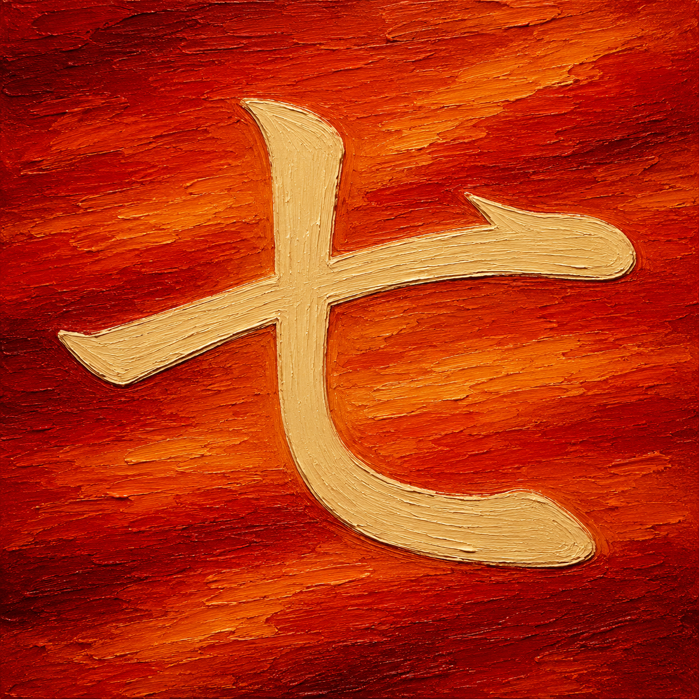
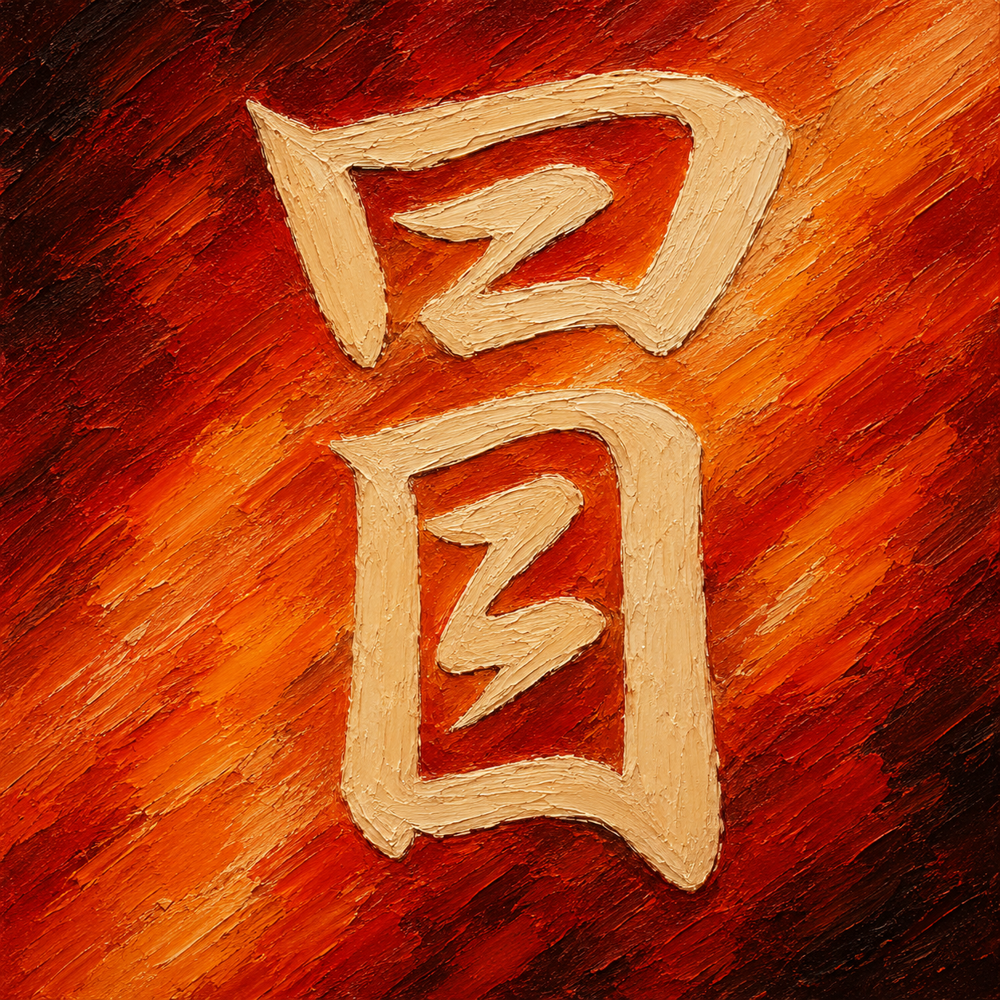
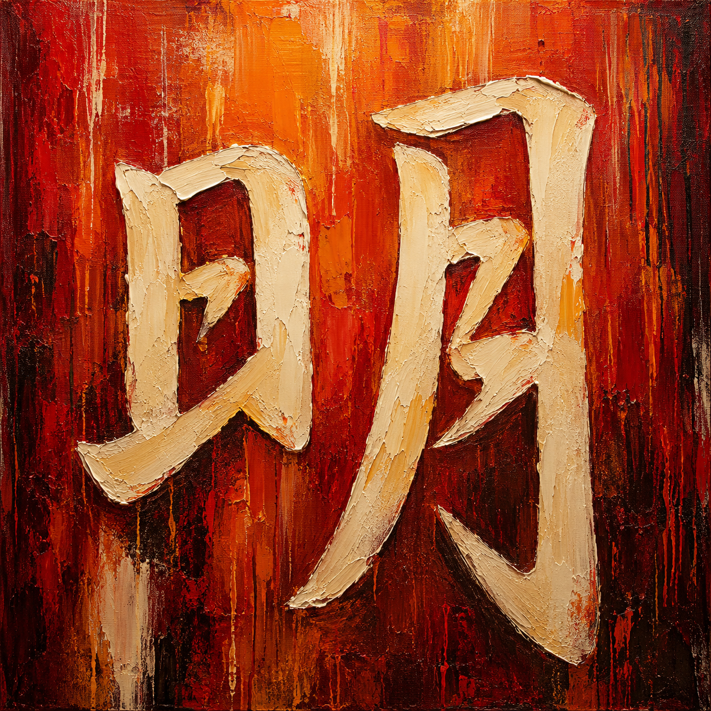

六 six
上に息
下へひらいて
形になる
from the top
the thought breaks open
into room
七 seven

ひとすじが
少し曲がって
意志になる
one stroke turns
and suddenly feels
like intent
八 eight
左右へと
ひらいてゆけば
道になる
the middle opens
and the world stops asking
for only one way
九 nine
曲がりつつ
ほどけず残る
強い先
it leans forward
without falling out
of itself
十 ten
縦と横
出会ったところに
芯が立つ
where lines cross
a quiet center
holds them both
口 mouth
声の前
四角い静けさ
口を待つ
before the word
there is an opening
waiting to speak
日 sun
日の中に
おさまる光
まだあたたかい
day stands still
inside its simple walls
glowing quietly
月 moon
田 field

田の区切り
育つためには
道も要る
the earth is split
so life can rise
with somewhere to go
目 eye
見つめれば
形の奥にも
気配あり
the eye holds still
and more than the surface
comes forward
古 old
古きもの
消えずに残る
声のよう
old does not mean gone
it means the shape of time
still speaking
吾 I
われここに
大きく言わず
ただ在りぬ
I am not thunder
just a place from which
the world is answered
冒 risk

見えぬまま
それでも一歩
出してみる
risk is not noise
it is the quiet foot
that still goes on
朋 companion
並び立つ
似た灯どうしの
あたたかさ
side by side
not one shadow deeper
than the other
明 bright

日と月が
ともにあるとき
明るさ満つ
brightness deepens
when light meets another light
and neither fades